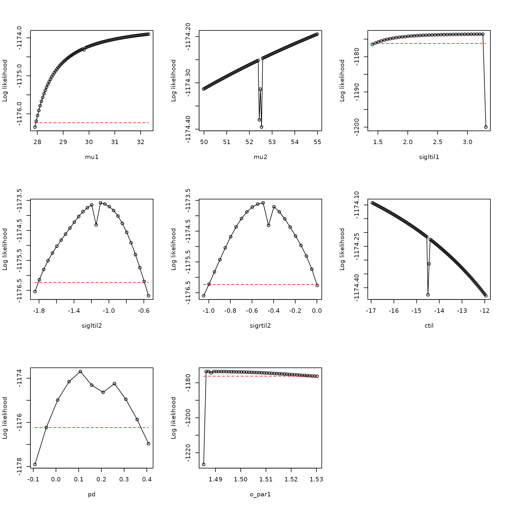
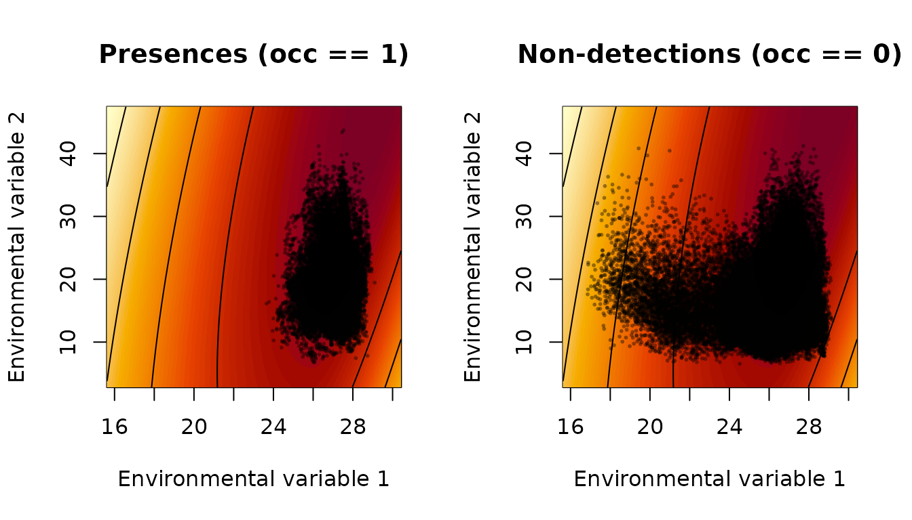
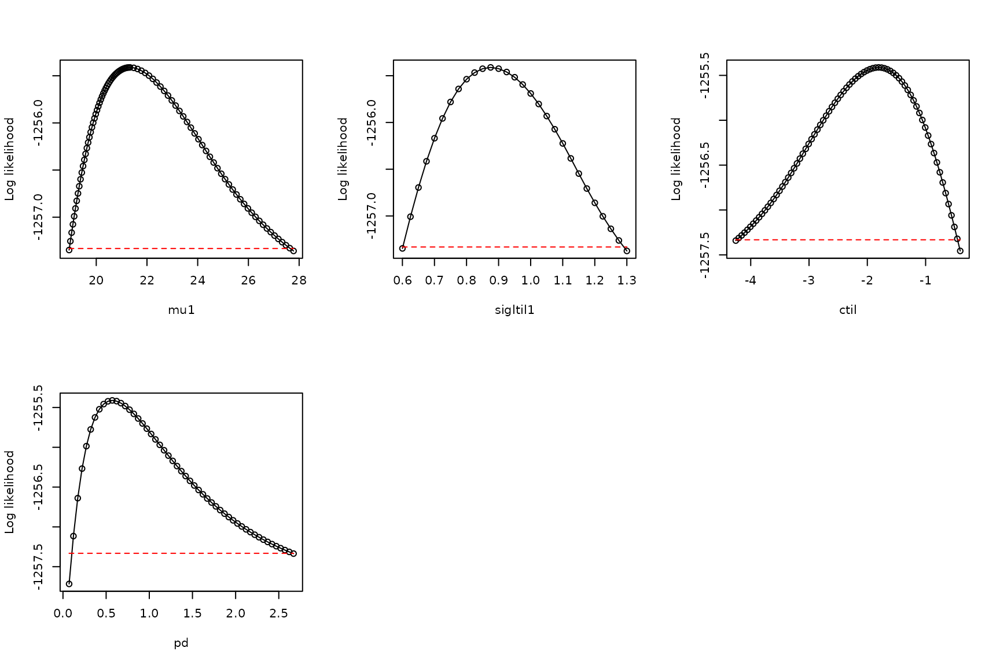

Unusable models: when a model does not have a maximum likelihood
Daniel C. Reuman
Department of Ecology and Evolutionary Biology and Center for Ecological Research, University of KansasAngel Luís Robles Fernández
Department of Ecology and Evolutionary Biology and Center for Ecological Research, University of KansasSource:
vignettes/04-unuseable_models.Rmd
04-unuseable_models.Rmd\[ \newcommand{\mean}[1]{\overline{#1}} \newcommand{\var}{\text{var}} \newcommand{\cov}{\text{cov}} \newcommand{\cor}{\text{cor}} \newcommand{\Rp}{\text{Re}} \newcommand{\E}{\text{E}} \newcommand{\ltsgr}{\text{ltsgr}} \newcommand{\expit}{\text{expit}} \newcommand{\logit}{\text{logit}} \]
Abstract. When an xsdm model does not have a maximum likelihood, it should not be used. This document shows an example of how that can occur, and how to diagnose it. Along the way, another type of boundary model (in addition to the \(p_d=1\) case described elsewhere) is illustrated. In the new boundary model, sigma parameters are set to infinity, corresponding to insensitivity of annual net growth to environmental changes in a certain direction in environment space. This example is based on occurrence data from GBIF for Ophisaurus ventralis, the Eastern glass lizard.
The Eastern glass lizard, Ophisaurus ventralis, is a legless lizard found in the southeastern United States. It is the longest and heaviest species of its genus, growing up to 108cm in total length.
We start by loading the data:
## [1] 2728 39 6
dimnames(env_array)[[3]]## [1] "BIO01" "BIO10" "BIO11" "BIO12" "BIO16" "BIO17"
occ <- example_2$occ_vec
length(occ)## [1] 2728Here, there are 6 environmental variables recorded for 39 years in
2728 locations, with accompanying detections and pseudo-absences in the
variable occ. The first three environmental variables
(BIO1, BIO10, BIO11) are temperature variables, and the last three
(BIO12, BIO16, BIO17) are precipitation variables. BIO1 is mean annual
temperature, BIO10 is mean temperature of the warmest quarter, BIO11 is
mean temperature of the coldest quarter, BIO12 is annual precipitation,
BIO16 is precipitation of the wettest quarter, and BIO17 is
precipitation of the driest quarter.
Now look at the distributions of values of environmental variables to make sure they are not on very different scales, which could cause problems for optimization:
## BIO01 BIO10 BIO11 BIO12 BIO16 BIO17
## 2.5% 12.21 21.39 3.85 88.08 10.14 2.21
## 25% 16.88 25.77 8.88 114.44 14.34 4.37
## 50% 18.71 26.64 11.53 131.58 17.40 5.78
## 75% 20.43 27.33 14.38 151.16 20.91 7.22
## 97.5% 24.30 28.30 20.73 195.81 29.55 10.72These distributions look basically OK.
Now fit 15 models, each from 25 starting conditions:
models <- matrix(c(1,0,0,0,0,0,
0,1,0,0,0,0,
0,0,1,0,0,0,
0,0,0,1,0,0,
0,0,0,0,1,0,
0,0,0,0,0,1,
1,0,0,1,0,0,
1,0,0,0,1,0,
1,0,0,0,0,1,
0,1,0,1,0,0,
0,1,0,0,1,0,
0,1,0,0,0,1,
0,0,1,1,0,0,
0,0,1,0,1,0,
0,0,1,0,0,1), nrow=15, byrow=TRUE)
all_model_results <- list()
for (i in 1:nrow(models))
{
env_dat <- env_array[ , , models[i,]==1, drop = FALSE]
starts <- start_parms(env_dat[occ==1,,,drop=FALSE],num_starts=25)
all_optim_results <- list()
for (j in 1:nrow(starts))
{
all_optim_results[[j]] <- optim(par = starts[j,],
fn = loglik_math,
method = "BFGS",
env_dat = env_dat,
occ = occ,
negative=TRUE,
control = list(trace=0)
)
}
all_model_results[[i]] <- all_optim_results
}Within each model, rank the optimization results:
for (i in 1:length(all_model_results))
{
values <- sapply(X = all_model_results[[i]], FUN=function(x){x$value})
inds <- order(values)
all_model_results[[i]] <- all_model_results[[i]][inds]
}Rank the models by BIC, bearing in mind that we’ve been working with the negative of the likelihood:
model_BICs <- sapply(X=all_model_results,
FUN=function(x){
best_loglik = x[[1]]$value
num_parms = length(x[[1]]$par)
n = length(occ)
BIC = 2*best_loglik + num_parms*log(n)
return(BIC)
}
)Also by AIC, then display:
model_AICs <- sapply(X=all_model_results,
FUN=function(x){
best_loglik = x[[1]]$value
num_parms = length(x[[1]]$par)
AIC = 2*best_loglik + 2*num_parms
return(AIC)
}
)
inds <- order(model_BICs)
rbind(model_BICs[inds],model_AICs[inds])## [,1] [,2] [,3] [,4] [,5] [,6] [,7] [,8]
## [1,] 2419.993 2473.974 2482.634 2550.379 2580.207 2586.112 2593.000 2593.550
## [2,] 2366.792 2420.772 2429.433 2520.822 2550.650 2556.556 2539.799 2540.348
## [,9] [,10] [,11] [,12] [,13] [,14] [,15]
## [1,] 2594.320 2595.875 2602.761 2676.556 2682.887 2915.417 2945.898
## [2,] 2541.118 2542.673 2549.560 2647.000 2629.686 2885.860 2916.341
plot(model_BICs,model_AICs,type="p",xlab="BIC",ylab="AIC")
order(model_BICs)## [1] 11 8 14 5 3 1 7 13 9 15 10 2 12 4 6
order(model_AICs)## [1] 11 8 14 5 7 13 9 15 10 3 1 12 2 4 6The AIC and BIC results are pretty well aligned, and the four best models are the same:
models[order(model_BICs)[1:4],]## [,1] [,2] [,3] [,4] [,5] [,6]
## [1,] 0 1 0 0 1 0
## [2,] 1 0 0 0 1 0
## [3,] 0 0 1 0 1 0
## [4,] 0 0 0 0 1 0These four models all use the same predictor, the fifth one, and then some use various possible second predictors.
We emphasize that these BIC and AIC values may or may not be meaningful, since B/AIC can only be computed when the likelihood has been effectively maximized. We will elaborate below, but for now we accept these are pseudo-BIC and pseudo-AIC values, subject to later validation or rejection.
Among the models we fitted, there is one clear winner in pseudo-BIC (the model with the lowest pseudo-BIC). So let’s investigate it further. Start by optimizing it a bit harder to see if we can do any better.
i <- 11
env_dat <- env_array[,,models[i,]==1,drop=FALSE]
starts <- start_parms(env_dat[occ==1,,,drop=FALSE], num_starts = 100)
model_11_results <- list()
for (j in 1:nrow(starts))
{
model_11_results[[j]] <- optim(par=starts[j,],fn=loglik_math,
method="BFGS",
env_dat = env_dat,
occ = occ,negative=TRUE,
control = list(trace=0))
}
all_model_results[[11]][[1]]$value## [1] 1174.396## [1] 1174.354About the same.
Now move forward by looking at the results for this model, starting by writing a convenience function for examine optimization results:
examine_optim_results <- function(optim_results,mask=NULL)
{
#put optimization results in order from best to worst
bestlogliks <- sapply(X=optim_results,FUN=function(x){x$value})
inds <- order(bestlogliks)
bestlogliks <- bestlogliks[inds]
optim_results <- optim_results[inds]
#model convergence
convergences <- sapply(X=optim_results,FUN=function(x){x$convergence})
#compute distances to the best result in parameter space
best_parms_math <- optim_results[[1]]$par
parms_dists_to_best <- lapply(
X=optim_results,
FUN=function(x){
dist_between_params(
x$par,
best_parms_math,
mask=mask,
give_closest_rep=TRUE)
}
)
parms_dists <- sapply(X=parms_dists_to_best, FUN=function(x){x$distance})
bestparms <- sapply(X=parms_dists_to_best, FUN=function(x){unlist(x$representative)})
#put it all together
return(rbind(bestlogliks,convergences,parms_dists,bestparms))
}
h <- examine_optim_results(all_model_results[[11]])
t(h[ ,1:8])## bestlogliks convergences parms_dists mu1 mu2 sigltil1
## [1,] 1174.396 0 0.000000 29.53229 49.10733 6.312314e-01
## [2,] 1174.478 0 3.659640 29.31359 45.68728 6.324729e-01
## [3,] 1174.524 1 3.657095 29.28334 45.66600 6.431441e-01
## [4,] 1174.615 1 7.370553 29.07606 42.23728 6.384445e-01
## [5,] 1174.639 1 7.664594 29.06959 42.00460 6.535947e-01
## [6,] 1174.765 1 7.671312 29.02223 41.83031 6.206297e-01
## [7,] 1198.763 0 29.464908 24.98672 22.77742 3.202862e+04
## [8,] 1217.073 0 28.167206 40.95720 24.17343 3.734968e+02
## sigltil2 sigrtil1 sigrtil2 ctil pd o_mat1 o_mat2
## [1,] 6.733026 0.3218009 13.85173 -13.278926 0.5393361 0.9965467 -0.08303475
## [2,] 6.388541 0.3232464 3339.36142 -11.997158 0.5417885 0.9963504 -0.08535778
## [3,] 6.351200 0.3212587 433.71436 -12.069050 0.5397711 0.9964882 -0.08373307
## [4,] 6.038240 0.3226673 3492.80325 -10.649592 0.5443655 0.9961846 -0.08727052
## [5,] 6.040673 0.3174715 204.19111 -10.437524 0.5461967 0.9962345 -0.08669963
## [6,] 5.887293 0.3307282 52.35843 -10.907681 0.5403760 0.9960977 -0.08825696
## [7,] 2.798811 0.1194403 179.82104 -2.325735 0.6155530 -0.9993029 0.03733265
## [8,] 4.202790 0.6395854 20.48267 -7.368288 0.5347857 0.6021973 -0.79834728
## o_mat3 o_mat4
## [1,] 0.08303475 0.9965467
## [2,] 0.08535778 0.9963504
## [3,] 0.08373307 0.9964882
## [4,] 0.08727052 0.9961846
## [5,] 0.08669963 0.9962345
## [6,] 0.08825696 0.9960977
## [7,] 0.03733265 0.9993029
## [8,] 0.79834728 0.6021973The very large values of sigrtil1 suggest the boundary
model where this parameter is set to Inf, corresponding to
a direction in environment space along which annual net growth is
insensitive to changes in the environment.
So we consider the corresponding boundary model:
i <- 11
env_dat <- env_array[ , , models[i,] == 1, drop=FALSE]
mask <- c(sigrtil1 = Inf)
new_starts <- start_parms(env_dat[occ == 1, , , drop=FALSE],
mask = mask,
num_starts = 100)
bdry_optim_results <- list()
for (j in 1:nrow(new_starts))
{
bdry_optim_results[[j]] <- optim(par = new_starts[j,],
fn = loglik_math,
method = "BFGS",
env_dat = env_dat,
occ = occ,
mask = mask,
negative = TRUE,
control = list(trace=0, maxit=500))
}Now look at these results:
h <- examine_optim_results(bdry_optim_results, mask = mask)
t(h[ ,1:8])## bestlogliks convergences parms_dists mu1 mu2 sigltil1 sigltil2
## [1,] 1174.314 0 0.000000 29.80781 52.48489 7.077802 0.3178120
## [2,] 1174.347 0 2.664900 29.61165 50.05280 6.888541 0.3225889
## [3,] 1174.381 0 2.084646 29.61994 50.50126 6.856338 0.3205543
## [4,] 1174.393 0 4.670735 29.50979 48.19736 6.724723 0.3179098
## [5,] 1174.416 0 4.050722 29.48807 48.65409 6.672816 0.3282775
## [6,] 1174.427 0 6.168444 29.42779 46.73657 6.537189 0.3194078
## [7,] 1174.429 0 4.701824 29.44205 48.06048 6.623281 0.3220493
## [8,] 1174.429 0 3.846229 29.50345 48.82800 6.674206 0.3219386
## sigrtil1 sigrtil2 ctil pd o_mat1 o_mat2 o_mat3
## [1,] Inf 0.6393998 -14.44921 0.5393101 0.08238505 0.9966006 -0.9966006
## [2,] Inf 0.6355975 -13.37877 0.5412292 0.08290388 0.9965575 -0.9965575
## [3,] Inf 0.6335596 -13.83706 0.5385828 0.08206070 0.9966273 -0.9966273
## [4,] Inf 0.6452119 -12.62062 0.5423834 0.08388754 0.9964752 -0.9964752
## [5,] Inf 0.6204243 -13.17693 0.5391875 0.08366047 0.9964943 -0.9964943
## [6,] Inf 0.6395714 -12.24428 0.5426578 0.08559728 0.9963298 -0.9963298
## [7,] Inf 0.6320109 -12.90138 0.5396961 0.08292752 0.9965556 -0.9965556
## [8,] Inf 0.6288177 -13.29787 0.5383230 0.08297769 0.9965514 -0.9965514
## o_mat4
## [1,] 0.08238505
## [2,] 0.08290388
## [3,] 0.08206070
## [4,] 0.08388754
## [5,] 0.08366047
## [6,] 0.08559728
## [7,] 0.08292752
## [8,] 0.08297769The best likelihoods obtained for this boundary model are very
similar to those obtained for the initial, non-boundary model, and the
boundary model has one fewer parameter, so we tentatively adopt the
boundary model over the earlier model. However, these optimization
results reveal that we probably still have not successfully optimized
the likelihood, or that the likelihood surface may have a ridge or an
asymptote or other pathological feature. One sees this by observing that
whereas the top several optimization results are similar in likelihood,
they are spread out in parameter space (the parms_dists
column shows distance in parameter space to the top-likelihood
result).
To investigate the model further, we profile:
pnames <- names(make_mask_names(2))
pnames <- pnames[!(pnames %in% names(mask))]
values <- sapply(X=bdry_optim_results, FUN=function(x){x$value})
inds <- order(values)
bdry_optim_results <- bdry_optim_results[inds]
all_profiles <- list()
linc <- rep(0.05, length(pnames))
rinc <- rep(0.05, length(pnames))
linc[8] <- 0.001
rinc[8] <- 0.001
for (counter in 1:length(pnames))
{
all_profiles[[counter]] <- profile_likelihood(
profile_parameter = pnames[counter],
increment_left =linc[counter],
increment_right = rinc[counter],
num_steps_left = 50,
num_steps_right = 50,
alpha = 0.95,
optim_param_vector = bdry_optim_results[[1]]$par,
env_dat=env_dat,
occ = occ,
mask = mask,
num_threads = 6
)
}
names(all_profiles) <- pnamesNow plot these profiles:
plot_tool <- function(ap,index)
{
x <- ap[[index]]$profile$value_math
y <- ap[[index]]$profile$loglik
xlab <- names(ap)[index]
thresh <- ap[[index]]$threshold
plot(x,y,
type="o",xlab=xlab,
ylab="Log likelihood")
lines(range(x),rep(thresh,2),type="l",
lty="dashed",col="red")
}
par(mfrow=c(3,3))
plot_tool(all_profiles, 1)
plot_tool(all_profiles, 2)
plot_tool(all_profiles, 3)
plot_tool(all_profiles, 4)
plot_tool(all_profiles, 5)
plot_tool(all_profiles, 6)
plot_tool(all_profiles, 7)
plot_tool(all_profiles, 8)
These profiles are not dome-shaped, and have other idiosyncratic
features, confirming that we had not effectively optimized the
likelihood. The mu1, mu2, and
ctil profiles, in particular, show problems. These results
suggest a ridge in the likelihood surface that may rise asymptotically
along some path in parameter space for which mu2 is
increasing. We have not identified a maximum of the likelihood function,
and it looks as though there may not be one if the increase is indeed
asymptotic.
We look at what the growth-environment function looks like for the best parameters we have found so far, maybe that will give some insight into what is going wrong:
param_list <- bdry_optim_results[[1]]$par
param_list["sigrtil1"] <- Inf
param_list <- param_list[names(make_mask_names(2))]
param_list_bio <- math_to_bio(param_list)
interpret_parameters(param_list = param_list_bio,
plot_indices = c(1,2), env_dat=env_dat, occ = occ)
param_list_bio$mu## [1] 29.80781 52.48489Estimated values of mu2 are outside the range of the
environmental data. The actual distribution of the species is across
Florida and along the coasts of the Southeastern United States, and the
southern extent of the species is very likely constrained, on the
southern end of the range, by the Atlantic Ocean and the Gulf of Mexico
rather than by temperature and precipitation. Ultimately the modeling
probably fails here for these reasons. A Bayesian approach to the same
problem could likely address some of the limitations, here, by setting
appropriate priors. In the frequentist setting, one must discard the
model. AIC and BIC values are invalid when the likelihood has not been
adequately optimized and when the likelihood surface in the vicinity of
the optimum is not approximately a dome.
Immediate next steps should include examination of the second- and third-best models according to pseudo-BIC, to see if they have similar problems. For brevity and because we are just trying to illustrate statistical principles and workflows, we skip straight to examining the fourth-best model, which may be simpler because it only uses one environmental variable.
i <- 5
model_5_optim_results <- all_model_results[[i]]
h <- examine_optim_results(model_5_optim_results)
t(h[,1:8])## bestlogliks convergences parms_dists mu sigltil sigrtil
## [1,] 1255.411 0 0.0000000000 21.33012 2.399187 1208873.3242
## [2,] 1255.411 0 0.0001590943 21.33012 2.399232 1072536.0598
## [3,] 1255.411 0 0.0002968734 21.32996 2.399115 5999992.9188
## [4,] 1255.411 0 0.0008332980 21.32946 2.398987 1943.3197
## [5,] 1255.411 0 0.0011494547 21.32968 2.399102 959.3546
## [6,] 1255.411 0 0.0012001110 21.33004 2.399171 834.9980
## [7,] 1255.411 0 0.0028224249 21.33003 2.399168 354.4335
## [8,] 1255.412 0 0.0056786477 21.33120 2.399464 179.8249
## ctil pd o_mat
## [1,] -1.806488 0.6390043 1
## [2,] -1.806330 0.6390243 1
## [3,] -1.806742 0.6389815 1
## [4,] -1.806512 0.6389836 1
## [5,] -1.806276 0.6390270 1
## [6,] -1.806444 0.6390100 1
## [7,] -1.806433 0.6390213 1
## [8,] -1.806874 0.6389664 1One can see the boundary model with sigrtil set to
Inf should be considered:
env_dat <- env_array[,,models[i,]==1,drop=FALSE]
mask <- c(sigrtil1 = Inf)
new_starts <- start_parms(env_dat[occ==1,,,drop=FALSE],mask=mask,
num_starts=100)
bdry_optim_results5 <- list()
for (j in 1:nrow(new_starts))
{
bdry_optim_results5[[j]] <- optim(par=new_starts[j,],fn=loglik_math,
method="BFGS",
env_dat=env_dat,occ=occ,mask=mask,negative=TRUE,
control=list(trace=0,maxit=500))
}Examine these results:
h <- examine_optim_results(bdry_optim_results5,mask=mask)
t(h[,1:8])## bestlogliks convergences parms_dists mu sigltil sigrtil ctil
## [1,] 1255.411 0 0.000000e+00 21.32997 2.399159 Inf -1.806409
## [2,] 1255.411 0 9.275730e-05 21.33001 2.399151 Inf -1.806489
## [3,] 1255.411 0 6.953356e-05 21.32991 2.399151 Inf -1.806378
## [4,] 1255.411 0 8.098549e-05 21.33004 2.399171 Inf -1.806450
## [5,] 1255.411 0 5.519872e-05 21.33002 2.399175 Inf -1.806414
## [6,] 1255.411 0 6.522924e-05 21.33003 2.399177 Inf -1.806421
## [7,] 1255.411 0 5.004263e-05 21.32994 2.399167 Inf -1.806365
## [8,] 1255.411 0 7.438182e-05 21.33004 2.399178 Inf -1.806426
## pd o_mat
## [1,] 0.6390133 1
## [2,] 0.6390040 1
## [3,] 0.6390185 1
## [4,] 0.6390082 1
## [5,] 0.6390134 1
## [6,] 0.6390126 1
## [7,] 0.6390185 1
## [8,] 0.6390125 1
values <- sapply(X=bdry_optim_results5, FUN=function(x){x$value})
inds <- order(values)
bdry_optim_results5 <- bdry_optim_results5[inds]This model looks like it probably optimized well.
Next do profiles:
all_profiles <- list()
pnames <- names(make_mask_names(1))
pnames <- pnames[pnames!="sigrtil1"]
linc <- c(0.05,0.025,0.05,0.05)
rinc <- c(0.15,0.025,0.05,0.05)
for (counter in 1:length(pnames))
{
all_profiles[[counter]] <- profile_likelihood(
profile_parameter = pnames[counter],
increment_left = linc[counter],
increment_right = rinc[counter],
num_steps_left = 50,
num_steps_right = 50,
alpha = 0.95,
optim_param_vector = bdry_optim_results5[[1]]$par,
env_dat = env_dat,
occ = occ,
mask = mask,
num_threads = 6
)
}
names(all_profiles) <- pnames
par(mfrow=c(2,3))
plot_tool(all_profiles,1)
plot_tool(all_profiles,2)
plot_tool(all_profiles,3)
plot_tool(all_profiles,4)
The profiles look adequate. So the model is suitable for use, unlike the previous model. The BIC and AIC for this model are valid. If the second- or third-best model is suitable in the same manner, the lowest-BIC model suitable model should tend to be preferred.